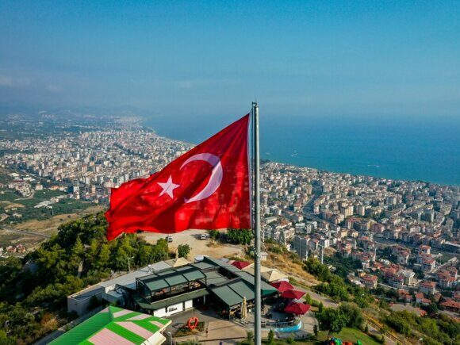

« НазадВсе о загранпаспорте: подготовка к путешествию в Турцию Турция заслуженно пользуется огромной популярностью среди туристов, ежегодно принимая миллионы гостей со всех уголков планеты. Её привлекательность обусловлена множеством факторов: тёплым климатом, богатой историей и культурой, живописными пейзажами, развитой туристической инфраструктурой и, конечно же, относительно доступными ценами. Для граждан России Турция традиционно считалась одним из самых удобных и комфортных направлений для отдыха. Однако, несмотря на кажущуюся простоту поездки, правильная подготовка к путешествию, включающая в себя внимательное отношение к документам, является неотъемлемой частью успешного и беззаботного отпуска. Несоблюдение формальностей может привести к неприятным задержкам и даже к отказу во въезде. Главным документом, необходимым для поездки в Турцию, является заграничный паспорт. Российские граждане могут использовать как биометрический, так и старый паспорт образца 1997 года, при условии, что срок его действия заканчивается не менее чем через 120 дней (4 месяца) после планируемой даты въезда в Турцию. Важно проверить срок действия паспорта заранее, так как несоответствие требованиям может стать причиной отказа в посадке на рейс или в пересечении границы. Оформление заграничного паспорта осуществляется в подразделениях МВД России. Процедура включает в себя подачу заявления, предоставление необходимых документов (копии паспорта гражданина РФ, фотографии) и оплату государственной пошлины. В зависимости от региона и загруженности подразделения, срок изготовления паспорта может варьироваться. Рекомендуется начать оформление загранпаспорта заблаговременно, особенно в пик туристического сезона. Наряду с загранпаспортом, важно обратить внимание на визовые требования. Для граждан России, планирующих туристическую поездку в Турцию сроком до 60 дней, виза не требуется. Однако, это правило распространяется только на туристов, въезжающих в страну с туристическими целями. Иные цели поездки (например, работа, учеба, проживание) требуют оформления соответствующей визы. При пересечении границы важно иметь при себе обратный билет, подтверждение бронирования отеля или иного места проживания, а также достаточное количество денежных средств для покрытия расходов на период пребывания в стране. Несоблюдение этих условий может послужить причиной отказа во въезде в Турцию. В этой статье мы подробно разберем все нюансы, чтобы ваше путешествие прошло гладко и без лишних волнений. Какой тип загранпаспорта лучше выбрать: старого образца или биометрический?Загранпаспорт старого образца формально не запрещен для въезда в Турцию. Однако, его использование сопряжено с рядом неудобств и рисков, которые могут серьёзно осложнить вашу поездку, а в некоторых случаях даже сделать её невозможной. Возможные проблемы: Замедленное прохождение паспортного контроля Пограничники в Турции, как и в других странах, привыкли к биометрическим паспортам. Обработка старого паспорта может занять больше времени, чем проверка биометрического, что приведёт к образованию очередей и задержке. В загруженный туристический сезон это может стать серьезной проблемой. Повышенное внимание со стороны пограничников Возможно, вас будут дольше допрашивать и проверять документы, поскольку старые паспорта предоставляют меньше информации для идентификации и не содержат биометрических данных. Это может быть неприятно и занять значительное время. Отказ во въезде (маловероятен, но возможен) Хотя официально старые паспорта принимаются, теоретически пограничник имеет право отказать во въезде, если посчитает ваши документы недостаточно надёжными для идентификации. Этот сценарий крайне маловероятен при наличии всех остальных необходимых документов (виза, если требуется, билеты, подтверждение бронирования отеля и т.д.), но исключать его полностью нельзя. Проблемы с электронными системами Некоторые системы регистрации и проверки документов в аэропортах и отелях Турции могут быть не оптимизированы для работы со старыми паспортами. Это может вызвать задержки при регистрации на рейс или заселении в отель. Ограничения страховых компаний Некоторые страховые компании могут отказать в выплате страхового возмещения в случае возникновения проблем, если вы путешествовали со старым паспортом, мотивируя это повышенным риском. Стоит уточнить этот момент у вашей страховой компании перед поездкой. В итоге: Хотя поездка с паспортом старого образца в Турцию технически возможна, это повышает риск возникновения задержек и неприятных ситуаций. Рекомендуется оформить биометрический загранпаспорт, чтобы избежать лишних проблем и обеспечить себе комфортное путешествие. Удобство и скорость прохождения паспортного контроля значительно выше с биометрическим паспортом. Экономия времени и нервов – весомый аргумент в пользу его оформления. Как оформить загранпаспорт?Процедура оформления загранпаспорта в России зависит от типа паспорта (старого или биометрического) и места подачи заявления (МФЦ или подразделение УВМ МВД России. Заявление также можно подать электронно на сайте Госуслуги). Общий алгоритм действий следующий: 1. Сбор необходимых документовВ зависимости от типа паспорта и вашего статуса (гражданин РФ старше 18 лет, несовершеннолетний и т.д.) список документов может немного различаться. Обязательно уточните полный список на официальном сайте УВМ МВД России или в ближайшем МФЦ. Требуется:
2. Подача заявленияПодача заявления на оформление заграничного паспорта — это важный процесс, который можно осуществить несколькими способами. Каждый из них имеет свои особенности и преимущества. Рассмотрим подробнее три основных метода подачи заявления. 1. Через портал Госуслуг: Этот способ считается самым удобным и современным. Вам необходимо зарегистрироваться на портале Госуслуг, если у вас еще нет аккаунта. После этого вы сможете заполнить анкету на получение заграничного паспорта онлайн. В процессе заполнения вам потребуется прикрепить необходимые документы, такие как фотографии, сканы паспорта гражданина РФ и другие справки, если это необходимо. Кроме того, вам нужно будет оплатить государственную пошлину, что также можно сделать через портал. После завершения всех этапов вы сможете выбрать удобное время для посещения подразделения УВМ МВД, где вам потребуется пройти процедуру дактилоскопии — сдачу отпечатков пальцев, а также сделать фотографию ( фото делают на месте). Этот способ удобен тем, что позволяет избежать очередей и значительно сэкономить время. После завершения всех процедур вам останется только дождаться готовности паспорта и забрать его в назначенное время. 2. Лично в подразделении УВМ МВД России: Если вы предпочитаете традиционный способ, вы можете обратиться в любое отделение ГУВМ МВД. Для этого вам нужно собрать полный комплект документов, включая паспорт гражданина РФ, фотографии, а также заполнить анкету. Если вы не заполнили анкету заранее через интернет, это можно сделать на месте. Обратите внимание, что фотографии должны соответствовать установленным требованиям ( размер 3,5х4,5 см, матовые на белом фоне). После подачи заявления вам также потребуется сдать отпечатки пальцев. Этот метод может занять больше времени, так как вам придется ожидать своей очереди в отделении, но он подходит тем, кто предпочитает личное общение и не хочет использовать интернет-сервисы. 3. Через МФЦ (Многофункциональный центр): Этот способ также требует предварительной записи на прием, которую можно сделать как через портал Госуслуг, так и по телефону. При посещении МФЦ вам необходимо иметь при себе оригинал и копию паспорта гражданина РФ, а также фотографии, соответствующие установленным стандартам. В отличие от подачи заявления через портал Госуслуг, в МФЦ вы будете подтверждать свою личность и предоставлять необходимые документы. Сотрудник МФЦ проверит комплектность документов, примет ваше заявление и выдаст расписку с указанием номера обращения и даты готовности паспорта. Обычно о готовности паспорта вас уведомляют через SMS или по телефону. После этого вы сможете забрать свой заграничный паспорт в выбранном МФЦ, предъявив паспорт. Важно заранее уточнить перечень необходимых документов, так как требования могут варьироваться в зависимости от конкретного МФЦ. При выборе способа подачи заявления на заграничный паспорт учитывайте свои предпочтения и возможности. Если вы предпочитаете максимальное удобство и хотите минимизировать время ожидания, портал Госуслуг будет наилучшим вариантом. Если же вам удобнее общаться с людьми и получать информацию непосредственно на месте, вы можете выбрать подачу заявления в отделении УВМ МВД или МФЦ. В любом случае, важно заранее подготовить все необходимые документы и внимательно ознакомиться с требованиями, чтобы избежать задержек и проблем в процессе получения заграничного паспорта. 3. Оплата госпошлиныОплата государственной пошлины за оформление загранпаспорта – обязательный этап получения документа. Размер госпошлины зависит от типа паспорта (обычный или биометрический) и срочности оформления, и может меняться, поэтому всегда следует проверять актуальную информацию на официальном сайте Госуслуг или в территориальном подразделении ГУВМ МВД России. На момент написания этой статьи госпошлина на 10-ти летний загранпаспорт составляет 6000 руб, на 5-ти летний 2000 руб. Для надежности актуальные суммы лучше уточнять на официальных ресурсах. Способы оплаты госпошлины: Существует несколько способов оплаты государственной пошлины за загранпаспорт: 1. Через портал Госуслуги: Это наиболее удобный и распространенный способ. После подачи заявления на оформление паспорта на портале Госуслуг, система предложит оплатить госпошлину. Оплата происходит онлайн, с использованием банковской карты. В этом случае вы получаете электронный квитанцию об оплате, которую нужно сохранить. Это самый быстрый и удобный способ, так как данные автоматически передаются в миграционную службу. 2. В отделениях банков: Вы можете оплатить госпошлину в любом отделении банка, имеющего право на осуществление подобных операций. Для этого потребуется заполнить квитанцию (реквизиты можно получить на сайте Госуслуг или в подразделении ГУВМ МВД России). Квитанция должна содержать все необходимые данные: ФИО плательщика, назначение платежа (указав тип паспорта и КБК отделения УВМ МВД, если есть), ИНН (при наличии), а также номер дела или заявления (если есть). После оплаты вы получите квитанцию с отметкой банка об оплате – ее необходимо сохранить. 3. Через терминалы самообслуживания: Многие банковские терминалы позволяют оплатить госпошлину. Процедура аналогична оплате в отделении банка, только информация вводится через терминал. Сохраните чек-распечатку об оплате. 4. Почтовым переводом: Этот способ менее распространен, но всё ещё возможен. Для этого нужно обратиться в почтовое отделение и заполнить почтовый перевод с указанием всех необходимых реквизитов. Данный способ оплаты занимает больше времени. Важно: Реквизиты: Реквизиты для оплаты госпошлины могут меняться, поэтому всегда используйте актуальные данные, полученные на официальном сайте Госуслуг или в подразделении ГУВМ МВД России. Использование устаревших реквизитов может привести к задержке обработки заявления. Квитанция: Независимо от выбранного способа оплаты, сохраните квитанцию об оплате. Она является подтверждением оплаты и потребуется при подаче документов на оформление паспорта. Сроки оплаты: Оплатить госпошлину необходимо в течение установленного срока, указанного в уведомлении о необходимости оплаты. Проверка оплаты: После оплаты рекомендуется проверить статус платежа на сайте Госуслуг (при оплате через портал) или в подразделении ГУВМ МВД России (при оплате другими способами). В случае возникновения сложностей с оплатой госпошлины, рекомендуется обратиться за помощью в ближайшее отделение ГУВМ МВД России или на горячую линию Госуслуг. Неправильное оформление платежа может существенно затянуть процесс получения загранпаспорта. 4. Получение паспортаПосле проверки документов и оплаты госпошлины, вам назначат дату получения готового паспорта. Срок изготовления паспорта зависит от типа паспорта, места подачи и загруженности подразделения. Визовые требования для граждан РоссииДля граждан России действует безвизовый режим для въезда в Турцию на срок до 60 дней. Это означает, что для туристических поездок сроком до двух месяцев виза не требуется. Однако важно помнить о следующих условиях: Срок действия загранпаспорта: Паспорт должен быть действителен на протяжении всего периода пребывания в Турции и иметь запас действия не менее 4 месяцев после начала поездки. Цель визита: Безвизовый режим распространяется на туристические, деловые и другие краткосрочные поездки. Для длительного проживания или работы потребуется оформление соответствующей визы. Финансовые гарантии: Пограничная служба может потребовать подтверждения наличия достаточных финансовых средств для проживания на время поездки. Это могут быть выписки с банковского счета, дорожные чеки, туристические ваучеры. Медицинская страховка: Наличие медицинской страховки, покрывающей расходы на лечение и медицинскую эвакуацию, рекомендуется, хотя и не является обязательным требованием. Что может стать причиной отказа во въезде?Несмотря на безвизовый режим, пограничная служба Турции имеет право отказать во въезде по нескольким причинам:
Поэтому тщательная подготовка и наличие всех необходимых документов значительно снижают риск отказа во въезде. Виза в ТурциюХотя для туристических поездок до 60 дней виза не требуется, для более длительного пребывания или других целей (работа, учеба, проживание) необходимо оформить соответствующую визу. Визы в Турцию выдаются посольством или консульством Турции в России. Процедура оформления визы включает в себя сбор необходимых документов (в зависимости от типа визы), заполнение анкеты, оплату визового сбора и подачу документов в визовый центр. Подробную информацию о типах виз и необходимых документах можно найти на официальном сайте посольства или консульства Турции. Процедура въездаПроцедура въезда в Турцию достаточно проста. По прибытии в аэропорт или на сухопутный пункт пропуска необходимо:
Возможные проблемы при поездкеВозможные проблемы во время поездки могут быть связаны с:
Рекомендации
ЗаключениеПоездка в Турцию для граждан России, как правило, не связана с серьезными трудностями в части оформления документов. Однако тщательная подготовка и внимательное отношение к деталям помогут избежать проблем и обеспечат комфортный и безопасный отдых. Внимательно изучите все требования, соблюдайте правила въезда и пребывания, и ваша поездка в Турцию пройдёт без осложнений. Не забывайте, что своевременное оформление документов и наличие необходимых гарантий – залог успешного путешествия. Приятного отдыха! Срочный загранпаспорт в Турцию за 10 дней!Мечтаете о турецком отдыхе, но загранпаспорт не готов? Паспортно-визовый центр "Север" предлагает сверхбыстрое оформление загранпаспорта всего за 10 дней! Мы возьмем на себя все хлопоты: сбор документов, консультации и подачу заявления. Более 20 лет опыта гарантируют качество и надежность. Удобное расположение в центре Москвы. Что мы предлагаем:
Вам понадобится:
Не откладывайте отпуск! Звоните: +79255854195 *Сроки могут меняться в зависимости от загруженности миграционной службы и наличия документов.
|
Комментарии
Комментариев пока нет